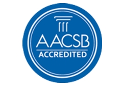
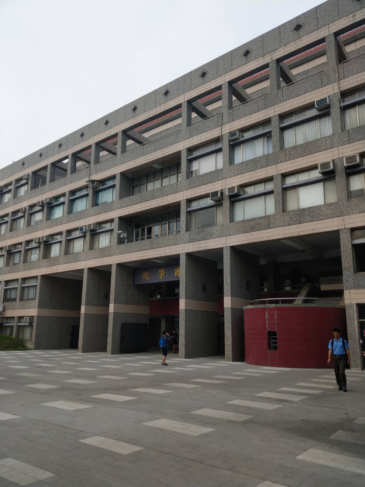
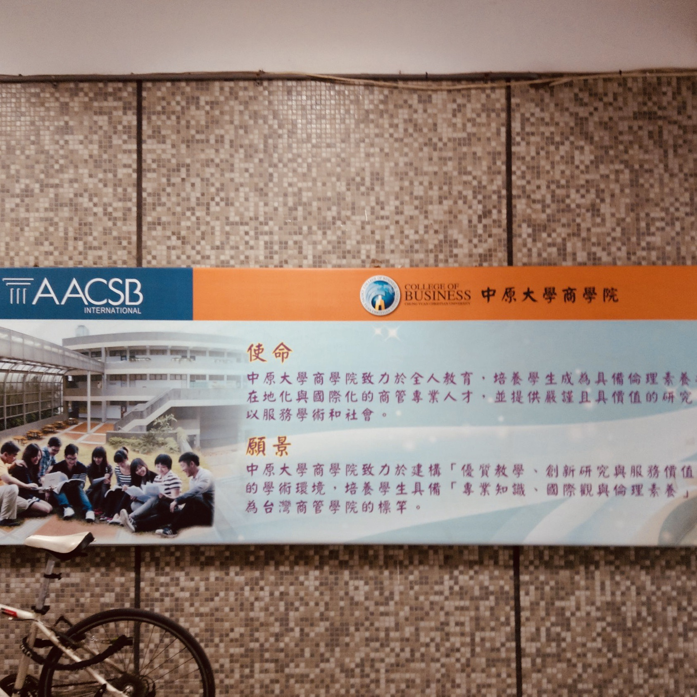

中原大學商學院日前通過國際商管學院促進協會（The Association to Advance Collegiate Schools of Business，簡稱AACSB）認證，
躋身全球前5%頂尖商管學院之列，為全台灣第12所大學獲此殊榮。
AACSB國際商管學院促進協會成立於1916年，為全球最具權威性的商管學院教育認證機構，而全球僅有不到5%商管學院獲此認證殊榮。
AACSB主要針對商管學院教學、研究、行政等績效，制定21項指標進行評鑑，評鑑過程及標準甚為嚴謹，認證過程及訪視全程皆採英語進行。
獲得AACSB認證為邁向國際化的指標，對於國際學生招募、學術交流及締結姊妹校等有很大助益
未來也希望大家能夠齊力同心，朝向國際化的發展而努力，共同開創中原大學的璀璨前景。